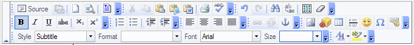

Using the Article Content Editor is similar to using Word or Frontpage with familiar a formatting tool bar. As displayed below.

Hover your mouse over the button to reveal the function it performs.
The following buttons are important to recognize:
Insert Image. Click on this icon to view Images that have been uploaded into this Articles image area. You cannot insert images into the KB article until you have uploaded them first to the storage area. To upload an image, click browse to search for a picture on your local hard drive, then click upload. Once uploaded you can then select it from the thumbnail window and insert it into the article.
Paste from word. When pasting a word document, often many uneeded formatting tags are inserted that can hinder proper html formatting. Press this button to open a new window, then paste into that window selecting any applicable formatting options and press ok. The pasted text is filtered and then inserted into the editor.
Switch to HTML view. In this mode you can view or Edit the HTML code directly.
 Insert Template. Opens a window to display Article Templates that have been predefined. Click on one of the templates to insert the template content at the current cursor position.
Insert Template. Opens a window to display Article Templates that have been predefined. Click on one of the templates to insert the template content at the current cursor position.
See Also: Help Topics,